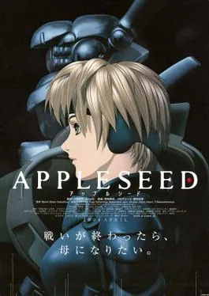

The genetics
Genetic engineering is at the centre of the world and the plot. The bioroids, half of Olympus's population, are engineered clones made from the DNA of Carl Knute, designed without harmful emotions to keep the peace and with their reproduction suppressed, which shortens their lives. Their creator, Dr. Gilliam Knute, also developed the D-Tank, which holds a virus able to sterilize humans, and the Appleseed data, which can restore bioroid reproduction; she hid the data with her daughter before she was killed. The conflict pits anti-bioroid soldiers, who hate them partly because they all share one man's DNA, against the Council of Elders, who want to use the virus to replace humanity with bioroids. Gilliam and her daughter are sympathetic and their genetics is used to secure coexistence, while the Elders show how the same science could be turned into a tool for wiping out humanity. The film raises questions about prejudice and the right to life of engineered people.
How genetics is portrayed
- Overall portrayal of genetics
- mixed A sympathetic creator and her heroic daughter use genetics to secure coexistence, while the Elders co-opt the same technology to replace humanity; the film weighs both.
- Outcome of the genetic intervention
- mixed The bioroids keep the peace and are finally allowed to reproduce, but the same engineering yields a sterilising virus that the Elders nearly use on humanity, and the bioroids' engineered dependence makes them the target of deadly terrorism.
- Dr. Gilliam Knute
- hero Aim: benevolent (positive). She created the bioroids from Carl Knute's DNA to keep humans from destroying each other, engineered the D-Tank and hid the Appleseed data with her daughter to protect both peoples from the Elders; the film presents her sympathetically, killed in front of her child.
- Council of Elders
- villain Aim: ideological, power (negative). They manipulate the army, were involved in Gilliam's death and plan to use the D-Tank virus to sterilise humanity so that bioroids inherit the Earth; they are the hidden antagonists Deunan defeats.
- Deunan Knute
- hero Aim: benevolent (positive). The ESWAT officer secures the D-Tank and uses her mother's Appleseed data to restore the bioroids' reproduction, the film's heroic resolution.
The story
In 2131, after a world war, the soldier Deunan Knute is still fighting in a ruined city when she is rescued by Hitomi, a bioroid, and her former lover Briareos, now a cyborg. They take her to Olympus, a utopian city ruled by the supercomputer Gaia, Prime Minister Athena, General Uranus and a Council of Elders, where half the population are bioroids, engineered beings made from the DNA of Deunan's late father. Deunan joins the ESWAT counter-terrorism unit and learns that bioroids cannot reproduce and depend on life-extension facilities, which a rogue army faction led by Colonel Hades destroys. She also learns that she carries the Appleseed data, left by her mother Gilliam, the creator of the bioroids, which can restore their ability to reproduce. The Elders reveal that they plan to use a virus in the D-Tank to sterilize humanity and leave the Earth to bioroids. Deunan and Briareos stop them, and Deunan uses the data to restore the bioroids' reproductive functions.